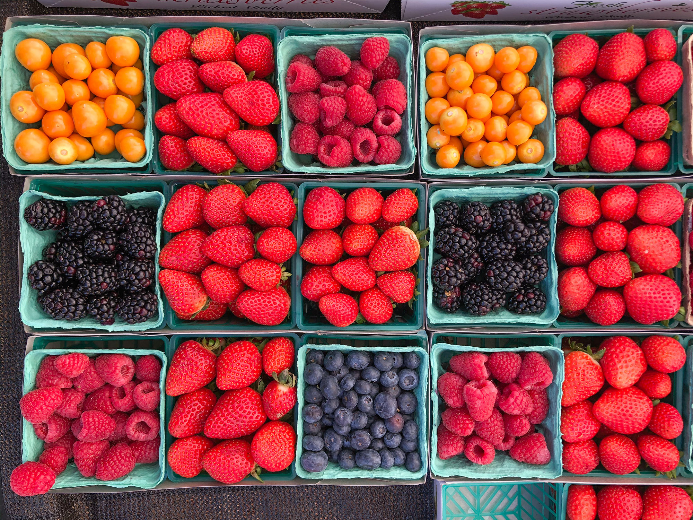
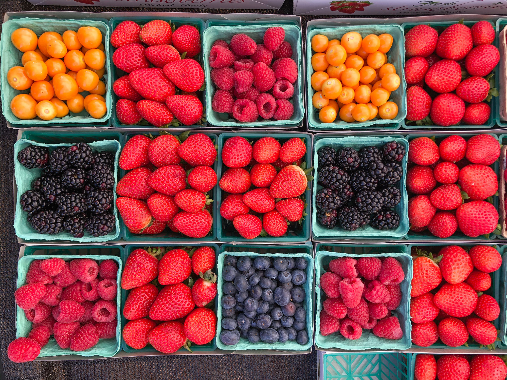

Summer is the best!
It is warm all around sometimes it may get a bit sweaty depending on the temperature, but it's better to feel warm constantly rather than cold.
During the summer, you can eat all kinds of fresh fruit since that is how they thrive. Cold beverages can be served without the need of worrying of
your body freezing up and also cools you down. Many flowers bloom, grasses grow and trees are greener. It allows for someone to enjoy the outside
and intake fresh air instead of being locked up at home all day. You can head to the beaches, get a nice tan, enjoy the summer air and also not worry
about school. It is the season that refreshes kids and even adults with vacations. There are more activites to enjoy with less stress and worries, it
is a season that easily appeals to others.

 
